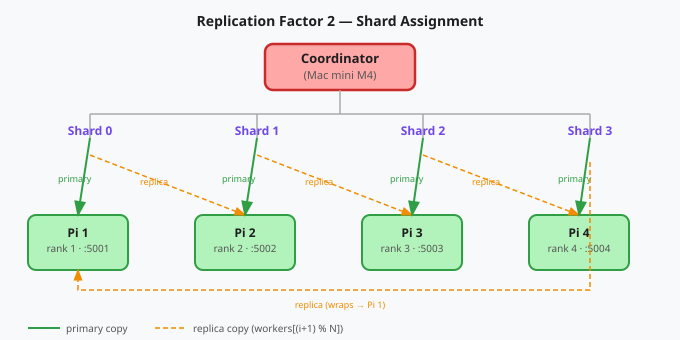
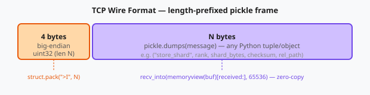

Distributing ML Checkpoints Across a Pi Cluster
A 942 MB checkpoint. Four Raspberry Pis. ~1.5 min gather. No single point of failure.
This is a technical writeup of smoltorrent — a distributed checkpoint sharding system built to offload .safetensors checkpoints from a Mac mini to a cluster of Raspberry Pi 4s over raw TCP. It shards, replicates, verifies integrity, and reassembles. The watcher daemon does all of it automatically the moment training writes a file. Grafana + Prometheus monitoring shows transfer progress and health without SSH.
The numbers, upfront
| Metric | With redundancy (RF2) | Without redundancy (RF1) |
|---|---|---|
| Checkpoint size tested | 942 MB | 942 MB |
| Workers | 4× Raspberry Pi 4 (4 GB) | 4× Raspberry Pi 4 (4 GB) |
| Store wall time | ~5 min (8 parallel sends) | ~2.5 min est. (4 parallel sends) |
| Gather wall time | ~1.5 min (4 parallel reads) | ~16 min (sequential, measured) |
| Network | ~100 Mbps Ethernet + Tailscale VPN | same |
| Replication factor | 2 (primary + one replica per shard) | 1 (primary only) |
| Single node failure | zero data loss | shard lost |
| Wire format | .safetensors only | same |
Real numbers — wall-clock times from Prometheus (9 runs avg), sequential baseline measured directly (242 s/shard × 4 workers). Parallel gather is ~10× faster than sequential.


Why this setup?
- Cost. A 4× Pi cluster with 64 GB microSD cards costs ~$200 and can be repurposed for other tasks. Storage is effectively free.
- Learning. The best way to understand distributed storage is to build one from scratch.
- I keep rewriting checkpoints. Long-running GRPO runs produce multi-gigabyte checkpoints at every step. Manually copying them was the bottleneck.
The obvious answer is just upload to HuggingFace/S3 — but I wanted to understand what actually happens underneath distributed storage, so I built it from scratch over raw TCP sockets.
The setup
A Mac mini M4 acts as the coordinator: it runs the API, the watcher daemon, and the monitoring stack, and owns all tensor ops (sharding via torch.chunk). Four Raspberry Pi 4s are the workers: TCP servers that store and serve shards. Any Linux or macOS machine can fill either role — the Pi is not special here.
| Role | Hardware | Chip | OS | RAM | Storage |
|---|---|---|---|---|---|
| Coordinator | Mac mini M4 | Apple M4 (arm64) | macOS 26.2 Tahoe | 16 GB | 256 GB SSD |
| Workers ×4 | Raspberry Pi 4 Model B Rev 1.5 | BCM2711 Cortex-A72 | Debian 13 Trixie (kernel 6.12) | 4 GB | 64 GB microSD |

Zero-config discovery — mDNS + AirDrop
There are no hardcoded IPs anywhere. When a worker starts, it immediately advertises over mDNS (_smoltorrent._tcp.local.) using Zeroconf:
# algorithms/SyncPS/worker.py
_advertiser = advertise_worker(rank=worker_rank, port=my_port, hostname=hostname)
logger.info(f"Worker {worker_rank} advertising on mDNS as smoltorrent-rank-{worker_rank}")The coordinator scans the network and finds all workers automatically. On macOS, AirDrop / AWDL discovery runs in parallel — two Macs on the same desk can communicate peer-to-peer without going through a router at all.
curl http://localhost:8000/discover
# → {"workers": [{"ip": "192.168.1.7", "port": 5001, "rank": 1, "hostname": "pi4-1"}, ...]}DHCP just reassigned all your Pi IPs? Doesn't matter. Run grove join on each worker and they re-register.
How sharding works
The coordinator loads the checkpoint, splits the tensor dict deterministically into N equal chunks (one per worker), and serializes each chunk to .safetensors bytes before spawning any threads.
# utils/common_utils.py
def chunk_data(data, n_chunks: int = 10) -> dict:
idx = torch.tensor(list(range(len(data))))
chunked_tensors = torch.chunk(idx, n_chunks)
data_chunks = {}
for chunk_idx, chunk_tensor in enumerate(chunked_tensors):
data_chunks[chunk_idx] = {
k: v for item_idx, (k, v) in enumerate(data.items())
if item_idx in chunk_tensor
}
return data_chunkstorch.chunk uses ceil(n / chunks) as chunk size — the last worker gets the remainder. The index tensor approach makes key assignment fully deterministic across runs, which matters for gather correctness.
Replication: the two-round scheme
Each shard is sent twice — once to the primary, once to the next worker in the ring:
# backend/api.py
for round_idx in range(REDUNDANCY): # REDUNDANCY = 2
for i, (sb, cs) in enumerate(shards):
jobs.append((workers[(i + round_idx) % num_workers], sb, cs, round_idx))Round 0: shard i → workers[i]. Round 1: shard i → workers[(i+1) % N]. With 4 workers that gives 8 parallel sends total, all dispatched in one ThreadPoolExecutor.

The store pipeline
The /store-shard endpoint is a StreamingResponse — it yields log lines as they happen:
Failed sends go into a retry queue with exponential backoff (2^attempt seconds, up to 6 retries). store_queue.join() blocks until every retry resolves or dead-letters.

Checksums
TCP guarantees delivery order but not data integrity — a bit flip, SD card write error, or memory fault can corrupt bytes that TCP happily delivers. Every shard gets a SHA-256 checksum computed before the bytes leave the coordinator:
checksum = hashlib.sha256(shard_bytes).hexdigest()
send_message(sock, ("store_shard", rank, shard_bytes, checksum, rel_path))The worker recomputes on arrival and rejects the shard on mismatch. After a successful write, a .checksum sidecar is saved on disk — checksums do two jobs: transit integrity (in memory) and storage integrity (via the sidecar at startup).
The bug that cost 11 minutes
Early in development the receive loop looked like this:
# OLD — the naive way
data = b""
while True:
chunk = sock.recv(65536)
if not chunk:
break
data += chunkA 169 MB shard took 13 minutes. Not 13 seconds — 13 minutes. CPU was pegged. The problem: bytes is immutable in Python. Every data += chunk allocates a brand-new bytes object and copies everything from the start. For a 169 MB shard arriving in ~2600 chunks of 65 KB each, that's roughly 240 GB of total memory copied. Classic O(n²).
The fix — pre-allocate a bytearray and use recv_into with a memoryview slice:
# networking/send_receive.py
buf = bytearray(msglen) # pre-allocate once, exact size
view = memoryview(buf) # zero-copy view into it
received = 0
while received < msglen:
n = sock.recv_into(view[received:], min(65536, msglen - received))
if not n:
raise ConnectionError("Socket connection broken")
received += n
result = pickle.loads(buf)recv_into writes directly into the buffer — no allocation, no copying. 13 minutes → 2 minutes. This is why recv_into + memoryview exists.
The wire format
Every message is a 4-byte big-endian length prefix followed by a pickled payload. TCP has no message boundaries — without the header the receiver can't tell where one message ends and the next begins.

# send_message — networking/send_receive.py
data = pickle.dumps(message)
sock.sendall(struct.pack(">I", len(data)) + data)4 bytes supports messages up to ~4 GB. Shards serialize to safetensors bytes (not raw pickle) — the actual payload is the tuple ("store_shard", rank, shard_bytes, checksum, rel_path).
Workers: TCP servers
Each worker is a TCP listener that dispatches on the first field of the incoming tuple:
# algorithms/SyncPS/worker.py
command, *_ = msg if isinstance(msg, tuple) else (msg,)
if command == "store_shard":
_, rank, shard_bytes, received_checksum, rel_path = msg
if compute_checksum(shard_bytes) != received_checksum:
send_message(conn, ("store_shard_failed", rank, "checksum mismatch"))
return
shard = shard_from_bytes(shard_bytes)
save_file(shard, str(shard_path))
cksum = compute_checksum(shard_path)
(shard_dir / "shard.checksum").write_text(cksum)
send_message(conn, ("store_shard_done", rank, str(shard_path)))| Command | What the worker does |
|---|---|
store_shard | Verify checksum → deserialize → write to disk → write .checksum |
send_shard | Load from disk → serialize → send bytes back |
sync | List existing shard rel_paths for the watcher |
checksum_sync | Re-hash disk file, compare to sidecar |
all_shards_present | Check which paths exist (crosscheck) |
heartbeat | Reply "alive" |
Gather: the subtle correctness requirement
When gathering, shards are keyed by shard index, not worker rank. This matters when a primary is unreachable and the replica serves the shard:
# backend/api.py
def _gather_one(i: int, worker: dict):
ok, err, result = _gather_and_save(worker, shard_index=i)
if not ok and REDUNDANCY > 1:
replica = workers[(i + 1) % num_workers]
ok, err, result = _gather_and_save(replica, shard_index=i) # still index i
return i, ...
# merge in index order — not rank order
merged = merge_shards([shards_by_index[i] for i in range(num_workers)])If shard 0's primary (rank 1) is down, rank 2 serves it — but it still lands in slot 0. It doesn't matter which physical machine served a shard, as long as it lands in the correct index slot.
The watcher: 4 phases
The watcher monitors ckpt_root with watchdog and runs a 4-phase loop on every new file:
file_sync
Query every worker in parallel: "what rel_paths do you have?" Take the intersection (paths on all workers). Diff against local files. Only transfer the difference.
checksum_sync (startup only)
Ask every worker to re-hash all their shards and compare to the .checksum sidecar. Catches silent disk corruption before training continues. Skipped on subsequent triggers — per-shard SHA-256 at store time already guarantees correctness.
transfer
POST /store-shard for each missing file. SHA-256 verified at the worker; mismatches queue a retry.
crosscheck
Ask every worker if they have every expected path. Any gap triggers a re-transfer. This is the final correctness guarantee.
Files detected while still being written go to a pending list rather than triggering immediately:
# watcher/watch.py
def _is_stable(path: Path, wait: float = 1.0) -> bool:
before = path.stat().st_size
time.sleep(wait)
return path.stat().st_size == beforeMonitoring
Prometheus + Grafana + Loki runs in Docker on the coordinator. Workers expose per-rank metrics on port 9200+rank. Metrics include per-operation counters, end-to-end wall-clock histograms, send/receive bandwidth, and per-worker error counts — enough to spot a slow Pi, a flaky cable, or a shard that keeps retrying, without SSH.
Try it
# Coordinator
grove start -n 4 # advertise over mDNS, wait for 4 workers
# Each worker Pi
grove join # TUI → select coordinator → auto-registers
# Store manually (watcher handles this automatically):
grove store --ckpt-path ~/checkpoints/run1/step_100/model.safetensors
# Or directly via HTTP:
curl -N -X POST "http://localhost:8000/store-shard?ckpt_path=/abs/path/model.safetensors"
# Gather back:
grove gather --ckpt-path ~/checkpoints/run1/step_100/model.safetensors
# → writes merged.safetensors in the same directoryPlatform notes
| Component | Coordinator | Worker |
|---|---|---|
| Tensor loading | MLX (mx.load) | safetensors.torch |
| Serialization | MLX → torch buffer → safetensors bytes | safetensors.torch |
| Deserialization | mx.load(BytesIO) | st_load(bytes) |
| Disk writes | mx.save_safetensors | safetensors.torch.save_file |
Versions tested: uv 0.9 · safetensors 0.7 · PyTorch 2.11 · MLX 0.31
The coordinator needs Apple Silicon for MLX. Workers are platform-agnostic — torch + safetensors only. A _NamedBytesIO shim gives mx.load() (which requires a .name ending in .safetensors) an in-memory buffer it can work with.
Challenges
None of this worked on the first try.
1O(n²) receive loop — 13 minutes for 169 MB
data += chunk on immutable bytes caused ~240 GB of total memory copies for a single shard. Fixed with bytearray + recv_into(memoryview(buf)[received:]) — pre-allocate once, write directly.
2Cross-framework serialization
Coordinator runs MLX; workers run torch. Pickle embeds the MLX class — crash on Pi. NumPy silently corrupts bfloat16. Safetensors (flat shape + dtype + raw bytes, no framework) works on both sides.
3Socket timeout killing large transfers mid-send
settimeout(2.0) set for connect was never cleared. Every sendall had a 2s deadline — fine for acks, fatal for 70 MB shards over Tailscale. Fix: sock.settimeout(None) as the first line of send_message and receive_message.
4Double serialization
/store-shard serialized each shard to compute its SHA-256, then passed the original dict to the sender which serialized it again inside the thread. Second serialization blocked long enough for the worker to close the connection. Fix: serialize once before spawning threads, pass bytes directly.
5MLX gather crash — wrong serializer on wrong machine
safetensors.torch.save_file() was called on the coordinator after gather, but shard_from_bytes returns MLX arrays on macOS — not torch tensors. Key embed_tokens.weight is invalid, expected torch.Tensor but received mlx.core.array. Fixed by branching on _IS_MAC and using mx.save_safetensors().
6macOS TCC silently blocking LaunchDaemons
TCC blocks system daemons from reading ~/Desktop, ~/Documents, ~/Downloads. The project lived at ~/Desktop/smoltorrent/ — daemon registered fine, ran at boot, found nothing, no error. Fixed by moving project to ~/smoltorrent/ and startup script to /usr/local/bin/ (TCC-safe).
7macOS 26 Tahoe broke every auto-start API
launchctl load → SIGABRT (API removed). bootstrap gui/<UID> → error 125. ~/Library/LaunchAgents/ → silently ignored (requires SMAppService from Swift now). The only working sequence: bootout system/… → bootstrap system <plist> → enable system/… with UserName and a PATH env block that includes /opt/homebrew/bin.
What's next
smoltorrent is a storage layer, not a training framework. The natural next step is tight integration with the training loop — triggering gather at resume and piping checkpoint metadata (step, loss, model ID) alongside the shard so the coordinator can reconstruct full training state without manual bookkeeping.
The mDNS + AWDL discovery is also worth pushing further — AWDL gives genuine peer-to-peer networking between Apple devices without any router, which opens up interesting topologies for Mac-to-Mac training clusters.